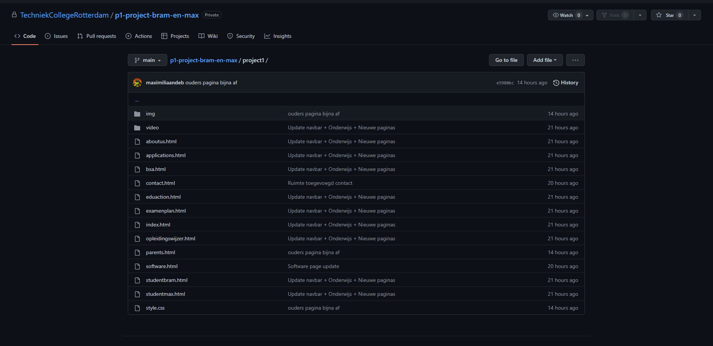

Figma is een ontwerptool die wij op het moment vrij veel gebruiken op school. Wij hebben dit nodig zodat wij bijvoorbeeld ontwerpen kunnen maken voor onze website. Het grote voordeel aan Figma als jij kijkt naar andere ontwerptools, is dat het makkelijk is om samen te werken met een teamgenoot.
Wij hebben Figma nu al best veel gebruikt. Wij hebben het veel gebruikt om het project te kunnen realiseren. Zo hebben wij een sitemap gemaakt waarin staat welke pagina’s er allemaal gaan komen en daar staat ook in hoe de pagina’s verbonden zijn.
Ook hebben we Figma gebruikt om wireframes te maken. Dit is een visualisatie van onze website. Je hebt low-fidelity- en high-fidelity wireframes. Low-fidelity wireframes zijn eigenlijk gewoon simple schetsen van de interface van de website. High-fidelity wireframes zijn meer gedetailleerd in tegenstelling tot de low-fidelity wireframes. In high-fidelity wireframes staat er wel informatie in tegenstelling to low-fidelity wireframes.
Visual Studio Code is het programma die wij als studenten gebruiken om te programmeren. In dit programma schrijven wij code in de programmeertalen HTML en CSS en binnenkort ook JavaScript. Dit is ook het programma die wij het meest gebruiken. Dit gebruiken we voor het vak Programmeren en het van Project.
Wij (Maxiliaan en Bram) hebben deze site ook gemaakt in Visual Studio Code. Dit hebben wij samen gedaan ook door middel van GitHub waar hieronder meer informatie over staat
Trello is het plan programma die wij gebruiken voor ons project. Dit programma hebben wij nodig zodat wij ons project kunnen plannen. Daar is Trello namelijk ook voor bedoelt. Je kan met behulp van Trello je project inplannen door middel van het aanmaken en verplaatsen van blokken tekst. Dit zie je allemaal in een makkelijk overzicht en zo is eenvoudig te zien wat er nog allemaal gedaan moet worden en wat er allemaal al is gedaan.
Ook in Trello is het mogelijk om samen te werken. Zo kan je met een team makkelijk je project inplannen zodat er geen miscommunicaties gaan komen en dat het project soepel verloopt.
GitHub is een programma die wij gebruiken en hebben gebruikt voor ons project. GitHub is ook iets wat wij gaan gebruiken in de toekomst als wij dit vak doorzetten. GitHub is namelijk essentieel voor het samen kunnen werken bij programmeren en projecten.
GitHub wordt gebruikt om code te delen tussen projectleden. Door het uploaden van jouw code op GitHub, kan je teamgenoot de code "pullen" waardoor die code ook bij zijn code komt. Doordat je steeds elkaars code bij elkaar doet, kan je makkelijk samenwerken in dezelfde bestanden.
GitKraken is een aansluiting van GitHub. GitKraken is er om het proces van het uploaden en "pullen" van bestanden makkelijker te maken. Het werkt precies hetzelfde als GitHub. Hieronder zie je ons project waar we nu mee bezig zijn.